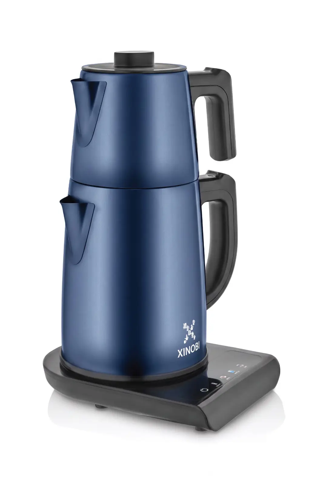
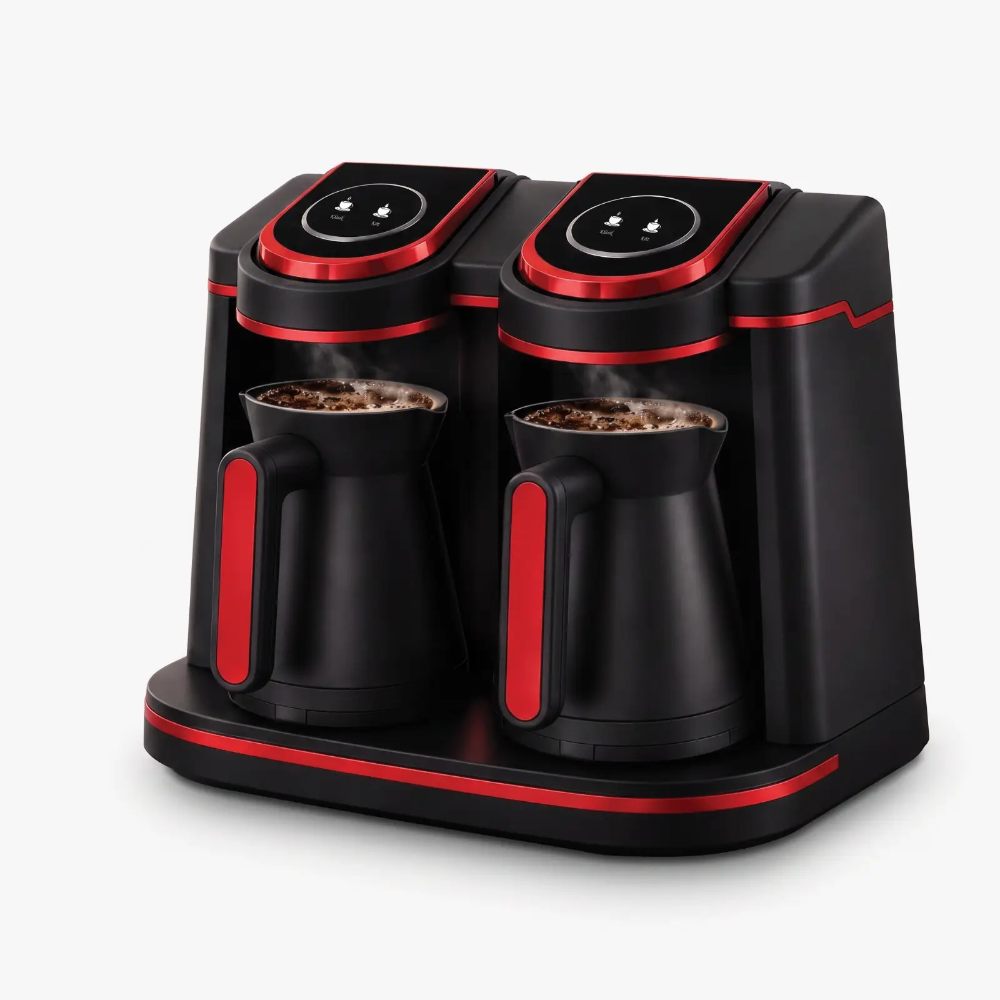

Yeni

Çay Makinesi 101
Fiyat ve stok doğrulanıyor
Ürünü incele →

KATEGORİLER
Temsili kategori görselleri · Admin panelinden yönetilir
ÖNE ÇIKANLAR

Fiyat ve stok doğrulanıyor
Ürünü incele →
Fiyat ve stok doğrulanıyor
Ürünü incele →Fiyat ve stok doğrulanıyor
Ürünü incele →Gerçek ürün, doğru varyant ve açık bilgi.
Kişisel seçimlerinize alan açan tasarım.
Web ve mobilde aynı sakin akış.
XINOBI DÜNYASI
NOBI
Ürünleri keşfetmenize veya XINOBI U adımlarını anlamanıza yardımcı olabilirim.
Temsili asistan · Gerçek yanıtlar Faz10’da Cloudflare Workers AI ve onaylı katalog verisiyle bağlanacak.